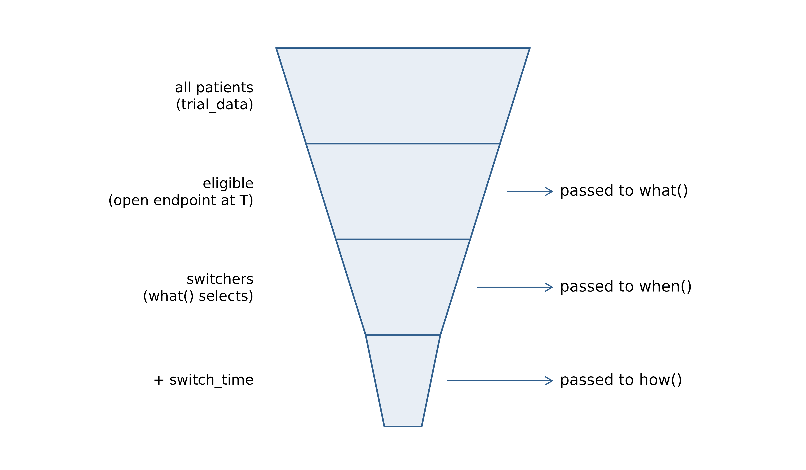

The dynamic treatment switching vignette describes crossover that is decided at enrollment: every patient’s switching rule is fixed when they enter the trial, off their own (fully simulated) outcome trajectory. That covers crossover-at- progression, rescue medication, and similar patient-level designs.
This vignette covers a different situation: crossover that becomes available only at, or after, a milestone, and is therefore a decision the trial makes once it reaches that milestone. Typical examples include:
- a promising efficacy signal is seen at an interim analysis, so control patients who are still on study are, on ethical grounds, offered the experimental treatment;
- after a futile dose is dropped at an interim, patients on that dose are switched to the retained dose;
- a protocol amendment opens crossover from a fixed calendar time onward.
The defining feature is that switching is anchored to a
calendar time that is not known until the trial runs
(it may be event-driven), and it applies only to patients who are still
in the trial when that time is reached. Already-observed outcomes must
not change; only the future may. TrialSimulator supports
this through the member function trial$crossover().
crossover() reuses the same what() /
when() / how() interface as
regimen(), so this vignette assumes familiarity with the
three-function design described in the dynamic
treatment switching vignette. Here we focus on what is specific to a
milestone crossover: the opening time, how the eligible population is
determined, and how the package validates the triplet you supply.
Where crossover() is called
Unlike add_regimen(), which must be registered
before add_arms() and is applied at enrollment,
crossover() is meant to be called inside the action
function of a milestone:
action <- function(trial){
locked_data <- trial$get_locked_data('interim')
## ... interim analysis / decision making ...
trial$crossover(what = what_fn, how = how_fn)
}
interim <- milestone(name = 'interim',
when = eventNumber(endpoint = 'pfs', n = 300),
action = action)You do not compute the crossover time yourself.
crossover() reads the trial’s current time internally and
sets the earliest crossover time T for you (see the next
section) – there is no need to call
trial$get_current_time() or to pass any time.
For context: when a milestone is triggered,
TrialSimulator advances the trial’s current time to that
milestone’s (calendar) trigger time and automatically stores a locked
snapshot of the data as of that time. This storing happens whether
or not the action calls get_locked_data(), which is
why a later milestone’s action can still retrieve a snapshot taken at an
earlier milestone. get_locked_data() does not edit the
evolving trial data; it only returns a time-cut view of it. Inside an
action, trial$get_current_time() therefore returns the
current milestone’s time – the same value crossover() uses
as the basis for T. (Calling crossover()
before any milestone has fired, when the current time is still
0, is rejected with an informative error.)
The user-friendly wrapper crossover(trial, ...) is also
available for those who prefer not to call member functions
directly:
crossover(trial, what = what_fn, how = how_fn)The earliest crossover time: delay and the opening
time
The only milestone-specific argument is delay. From it,
crossover() computes the earliest crossover
time – the calendar time from which switching may take
effect:
T = (current milestone time) + delayYou set only delay; the milestone time is supplied
automatically.
-
delay = 0(default): crossover opens at the milestone. This is the common “let eligible patients switch now” case. -
delay > 0: crossover opens a fixed amount of time after the milestone. This is convenient for an administrative ramp-up or a wash-out window before switching becomes effective.
T is the reference time for everything that follows: it
determines who is eligible, it is the floor for the switching
time, and it is the boundary that separates already-observed outcomes
(which are protected) from future outcomes (which how() may
modify).
Note that T is the earliest time a switch may
take effect, not necessarily when it does. Under the default timing
every selected patient switches exactly at T, but a
when() you supply may place each patient’s switch at any
time at or after T – for instance at a progression that
occurs after the opening.
How the eligible population is determined
A milestone crossover only makes sense for patients who still have
something left to change. Before calling what(), the
package therefore restricts the candidate pool to patients who are
still in the trial at T, i.e. patients
with at least one endpoint whose value has not yet been settled by
T. Concretely, for each patient the package checks whether
any endpoint is still open, using the reference time
ref = max(T, enroll_time) (so that not-yet-enrolled
patients are handled correctly too):
- a time-to-event endpoint is open when
enroll_time + min(event_time, dropout_time) > ref, i.e. neither the event nor dropout has occurred byref; - a non-time-to-event endpoint is open when
enroll_time + readout > refand the reading will actually be taken, that isreadout <= dropout_timeand the reading falls within the trial duration. A baseline endpoint (readout = 0) is measured at enrollment and is therefore never open.
A patient enters the pool passed to what() if
any of their endpoints is open. Patients who have died,
dropped out, or completed all of their readouts by T are
excluded automatically – they have no post-T outcome that a
crossover could alter. Eligibility does not depend on the treatment arm;
restricting the switch to particular arms is the job of
what(). This mirrors the way regimen()
“figures out patients who are eligible for the three functions”; the
difference is only the reference time T.
The three functions then receive progressively smaller data frames, which keeps the logic clean and avoids unnecessary computation:
-
what()receives the eligible patients; -
when()receives the patients thatwhat()actually selected for switching; -
how()receives those same switchers, with their assignedswitch_time.
All three functions share the same signature: each takes the data
frame patient_data and returns a data frame.
what(patient_data) # -> patient_id, new_treatment
when(patient_data) # -> patient_id, switch_time
how(patient_data) # -> patient_id, <modified endpoints>Importantly, the patient_data they receive is already
the filtered subset shown below; there is no way to reach a non-eligible
patient from inside the triplet, because the package controls the input.
This both prevents accidental logic errors and avoids unnecessary
computation.

To make timing rules easy to express, the package injects two helper
columns into patient_data for the triplet:
-
earliest_crossover_calendar_time, equal toT; -
earliest_crossover_time_from_enrollment, equal tomax(T - enroll_time, 0), i.e. the earliest admissibleswitch_timemeasured from enrollment.
These let when() express, for example, “switch at
progression, but not before crossover opens”:
time_selector <- function(patient_data){
data.frame(
patient_id = patient_data$patient_id,
switch_time = pmax(patient_data$pfs,
patient_data$earliest_crossover_time_from_enrollment)
)
}If when() is not supplied, patients switch at the
opening time T by default
(switch_time = earliest_crossover_time_from_enrollment).
How the package monitors the triplet’s output
Because the triplet is user-supplied, TrialSimulator
validates what each function returns and stops with an informative error
when an input would corrupt the simulation. This lets you develop the
three functions incrementally and catch mistakes early (a
browser() inside any of them is a convenient way to
debug).
what() must return a data frame with
columns patient_id and new_treatment, with one
row per switching patient. Patients you leave out simply do not switch,
so the returned set may be smaller than the input. The package checks
that:
- the result is a data frame containing the required columns;
- no
patient_idis duplicated; - every selected patient belongs to the eligible pool. Because
what()is only ever shown eligible patients, selecting a patient outside that pool indicates a logic error and is rejected.
new_treatment is a free-form label; it does not need to
be an existing arm. The randomized arm column is never
changed – the label is recorded only in the patient’s switching history
(see below).
when() must return a data frame with
columns patient_id and switch_time, measured
from enrollment. The package checks that:
- the result is a data frame containing the required columns;
- no
patient_idis duplicated; - a non-
NAswitch_timeis provided for every patient selected bywhat(); - the switch does not predate the opening time, i.e.
enroll_time + switch_time >= Tfor every switcher. A milestone crossover cannot take effect before it opens, so an earlier time is rejected.
how() must return a data frame with
patient_id and the endpoint columns it modifies. You return
only the endpoints you change, and within an endpoint you change just
the cells that should change and return the rest at their original value
– the natural ifelse(condition, new_value, original)
pattern used in the examples. The package checks that:
- the result is a data frame with a
patient_idcolumn, no duplicated ids, and only columns that exist in the trial data; - protected columns (
arm,enroll_time,dropout_time, and the internal switching-history column) are not modified; -
only post-switch outcomes are altered. Returning a
value that differs from the original for a cell whose readout or event
falls at or before the patient’s
switch_time– a pre-switch or already-observed outcome – is rejected. This guarantees that the crossover never rewrites history: outcomes observed before the switch are preserved exactly, and the data locked at the milestone is left intact.
In practice this means a how() for a milestone crossover
guards the post-switch region explicitly, for example:
data_modifier <- function(patient_data){
data.frame(
patient_id = patient_data$patient_id,
## extend only the residual (post-switch) survival; leave os unchanged
## for patients whose event is at or before the switch
os = ifelse(patient_data$os > patient_data$switch_time,
patient_data$switch_time +
1.2 * (patient_data$os - patient_data$switch_time),
patient_data$os)
)
}As with regimen(), never apply dropout or censoring
manually in how(); TrialSimulator re-applies
dropout and calendar censoring automatically after the crossover and
when locking data at later milestones.
Developing the triplet
The most convenient way to develop the three functions is to put a
browser() at the top of each, register them through
crossover() inside the milestone action, and run the trial.
Execution then pauses inside your function, with the actual
patient_data in scope – the eligible pool for
what(), and the selected switchers for when()
and how(). You can inspect the available columns (including
the injected helper columns), try your selection, timing, and update
logic on real data, and confirm the package handed you the subset you
expected.
what <- function(patient_data){
browser() # pause here with the eligible pool in scope
switchers <- patient_data[patient_data$arm == 'control', ]
data.frame(patient_id = switchers$patient_id, new_treatment = 'experimental')
}Comment out browser() before production runs; it is in
any case a no-op in non-interactive sessions, so it never interferes
with vignette building or parallel workers.
A worked example
The following runs a small two-arm trial end to end. Control patients
who are still on study at an interim are offered the experimental
treatment; each switches at progression, but no earlier than the moment
crossover opens, and only their post-switch survival is extended. We
first define the triplet and the action, using the full
crossover() signature:
what <- function(patient_data){
## return only the patients who switch (here, everyone on control)
switchers <- patient_data[patient_data$arm == 'control', ]
data.frame(
patient_id = switchers$patient_id,
new_treatment = 'experimental'
)
}
when <- function(patient_data){
data.frame(
patient_id = patient_data$patient_id,
switch_time = pmax(patient_data$pfs,
patient_data$earliest_crossover_time_from_enrollment)
)
}
how <- function(patient_data){
data.frame(
patient_id = patient_data$patient_id,
os = ifelse(patient_data$os > patient_data$switch_time,
patient_data$switch_time +
1.3 * (patient_data$os - patient_data$switch_time),
patient_data$os)
)
}
crossover_action <- function(trial){
trial$get_locked_data('interim') # interim decision making can go here
## delay = 0 opens crossover at the interim; use delay > 0 for a wash-out
trial$crossover(what = what, when = when, how = how, delay = 0)
}The remaining set-up (endpoints, arms, enrollment, the milestones,
and the run) is ordinary TrialSimulator code and is hidden
here for brevity.
After the run, each control switcher carries a recorded switching
history in the locked data. The recorded switch times show the timing
rule at work: a patient whose progression falls after the opening
switches at progression (a larger @ time), while a patient
who would have progressed earlier is held at the opening, so the
recorded time equals T - enroll_time – the
earliest_crossover_time_from_enrollment that
when() used:
final <- trial$get_locked_data('final')
head(final[final$arm == 'control',
c('patient_id', 'arm', 'regimen_trajectory', 'n_switches')])
#> patient_id arm regimen_trajectory n_switches
#> 1 1 control control@0;experimental@15.6081943558529 1
#> 3 3 control control@0;experimental@11.8666666666667 1
#> 5 5 control control@0;experimental@11.7333333333333 1
#> 8 8 control control@0;experimental@15.1609034077507 1
#> 9 9 control control@0;experimental@11.4666666666667 1
#> 12 12 control control@0;experimental@11.2666666666667 1Scenarios
Delayed opening (wash-out). Supplying
delay opens crossover after the milestone, which is useful
when switching cannot be implemented immediately:
trial$crossover(what = what, how = how, delay = 2) # opens 2 time units laterCustom timing. Provide when() to switch
at a clinically meaningful time rather than at the opening, using the
injected helper column to respect the opening floor (see the
time_selector example above).
Patients enrolled after the milestone. A milestone crossover also applies to patients who enroll later: they switch according to the same triplet once they are in the trial. There is nothing extra to do.
Several crossovers. crossover() can be
called in more than one milestone. Each call stacks an additional
switching opportunity, applied in chronological order, so a patient may
cross over more than once.
Relationship to add_regimen()
A milestone crossover and an enrollment-time regimen()
are the same machinery under the hood: both are sequences of
what() / when() / how() triplets,
each with an earliest crossover time. The enrollment regimen is simply
the special case where that time is 0 (switching is open
from the first enrollment); crossover() appends a triplet
whose earliest time is the milestone time plus delay. The
eligibility filter, the timing floor, and the post-switch protection
therefore behave consistently across both entry points.
Inspecting the switches
Every switch is recorded in the regimen_trajectory
column shown above, as a compact
"arm@0;new_treatment@switch_time" string. Use
expandRegimen() to expand it into one row per regimen
segment per patient for summaries and checks (continuing the worked
example above):
head(expandRegimen(final))
#> patient_id regimen switch_time_from_enrollment
#> 1 1 control 0.00000
#> 2 1 experimental 15.60819
#> 3 2 trt 0.00000
#> 4 3 control 0.00000
#> 5 3 experimental 11.86667
#> 6 4 trt 0.00000